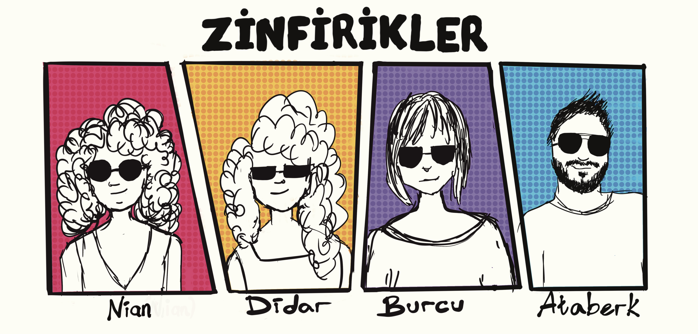
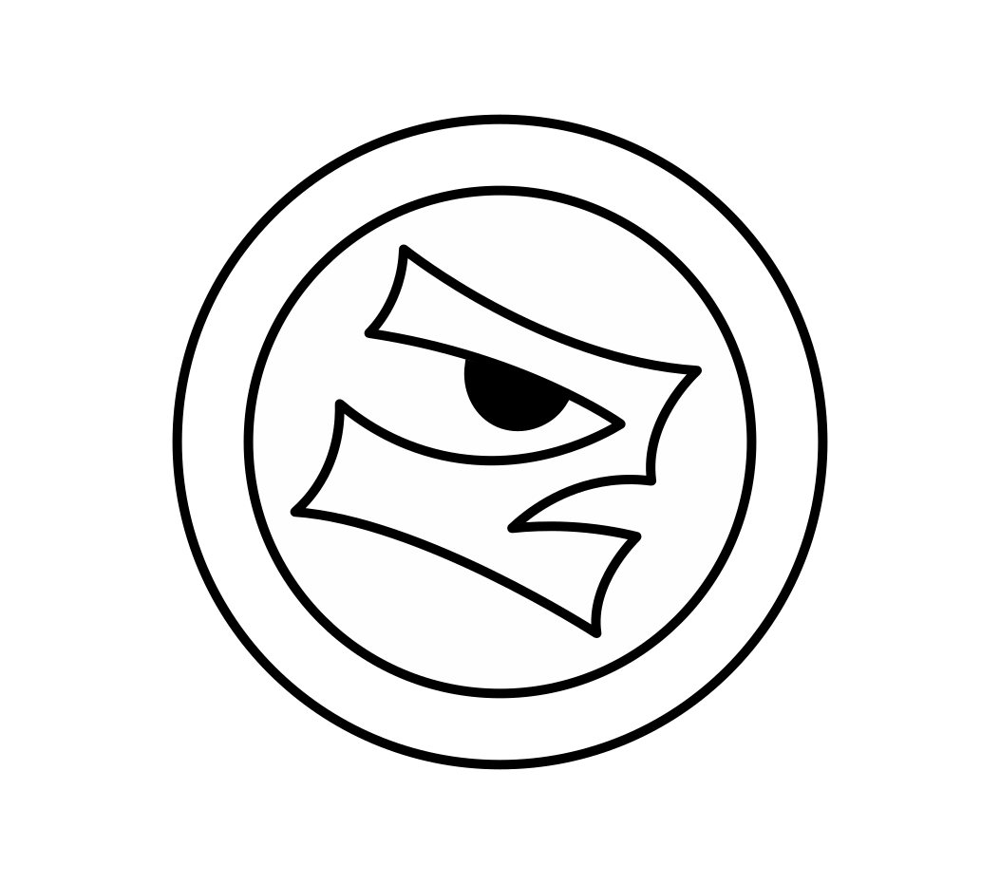

Zinfirik doğdu!!
Peki ne ola ki bu Zinfirik?
Festivaller ve etkinlikler için mekan bazlı, fiziksel deneyimler tasarlayan bir stüdyo. Dijital ile fizikseli oyunla birleştiriyoruz, bunu yaparken de epey eğleniyoruz.
Peki Zinfirik ne demek?
Onu hemen söylemiycez, biraz merak edin.
OYUNLARR
Stüdyomuz tarafından geliştirilen eğlenceli ve interaktif mini oyunlarımız çok yakında burada!
Peki biz kimiz?

Nian
Nian oyun tasarlıyo, bazen hocalık yapıyo, bazen özleyip tekrar öğrenci oluyo. Sanat sepet aşkıyla geeklik çağrısını aynı bünyede barındırdığı için arada kısa devre yapıyo ama sohbeti falan hiç fena değil.
[LinkedIn]Didar
Didar oyun etkinlikleri organize ediyo, oyunların iyileştirici gücüne inanıyo, hatta şu sıralar akademiyi de buna inandırmaya çalışıyo. Mimarlıktan pastacılığa her şeyi deneyecek kadar kafası karışık, ama girdiği her yeri bi güzelleştirmiyo da değil.
[LinkedIn]Burcu
Burcu oyunların kapsayıcı olması gerektiğine inanıyo (çünkü düzgün bi insan) ve bu konuda hem üretiyo, hem de akademik çalışmalar yürütüyo. Üstüne bi de çocuk büyütüyo, hepsini nasıl başarıyo bilmiyoruz, sorduk ama cevaplamaya vakit bulamadı.
[LinkedIn]Ataberk
Ataberk kurumsal bi işte çalışıyo, ne yaptığını tam anlamadık ama kalan vaktinde oyun, müzik, edebiyat falan bir sürü şeyle uğraşıyo, o yüzden onu her konuda konuşturabilirsiniz ama susturabileceğinizin garantisini veremeyiz.
[LinkedIn]
© 2026 Zinfirik Studio